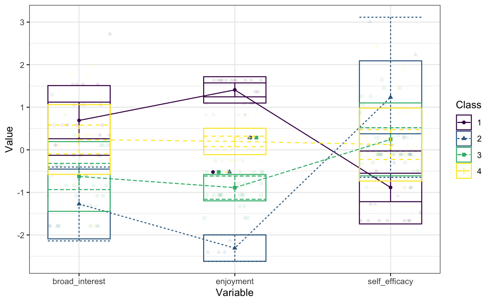

Introduction to tidyLPA
Joshua M. Rosenberg
2018-02-14
This introduction to tidyLPA vignette is an overview of the tidyLPA package. This vignette covers the following topics:
- Background on Latent Profile Analysis
- Description of the goals of tidyLPA
- Software approach to carrying out LPA: Interface to mclust (and to MPlus)
- An example
- More information on model specification
- An interface to MPlus (in-development)
- Other features
- Conclusion
1. Background on Latent Profile Analysis (LPA)
Latent Profile Analysis (LPA) is a statistical modeling approach for estimating distinct profiles of variables. In the social sciences and in educational research, these profiles could represent, for example, how different youth experience dimensions of being engaged (i.e., cognitively, behaviorally, and affectively) at the same time.
Many analysts have carried out LPA using a latent variable modeling approach. From this approach, different parameters - means, variances, and covariances - are freely estimated across profiles, fixed to be the same across profiles, or constrained to be zero. The MPlus software is commonly used to estimate these models (see here) using the expectation-maximization (EM) algorithm to obtain the maximum likelihood estimates for the parameters.
Different models (or how or whether parameters are estimated), such as models that allow only the means and variances to be freely estimated across profiles, and other common combinations in terms of estimating the means, variances, and covariances, can be specified and estimated. While MPlus is widely-used (and powerful), it is costly, closed-source, and can be difficult to use, particularly with respect to interpreting or using the output of specified models as part of a reproducible workflow.
2. Description of the goals of tidyLPA
The goal of tidyLPA is to make it easy to carry out LPA using R. In particular, tidyLPA provides an interface to the powerful and widely-used mclust package for Gaussian Mixture Modeling. This means that tidyLPA does not contain code to carry out LPA directly, but rather provides “wrappers” to mclust functions that make them easier to use. The primary contributions of tidyLPA are to:
- Provide functionality to specify models that are common to LPA
- Make it easier to use the output in subsequent analysis through a “tidy” interface, in that:
- input and output are both a
data.frame(specifically its modified version, atibble) that can be used to create plots or can be used in subsequent analyses - uses the “pipe” operator,
%>%to compose functions - being designed and documented to be easy to use, especially for beginners (but also to provide options for finer-grained choices for estimating the model and for viewing more specific forms of the LPA output)
- input and output are both a
3. Software approach to carrying out LPA: Interface to mclust (and to MPlus)
In the open-source R software, there is not yet a tool to easily carry out LPA, though there are many tools that one could use to. For example, the R version of OpenMx can be used for this purpose (and to specify almost any model possible to specify within a latent variable modeling approach). However, while OpenMx is very flexible, it can also be challenging to use.
Other tools in R allow for estimating Gaussian mixture models, or models of multivariate Gaussian (or normal) distributions. In this framework, the term “mixture component” has a similar meaning to a profile. While much more constraining than the latent variable modeling framework, the approach is often similar or the same: the EM algorithm is used to (aim to) obtain the maximum likelihood estimates for the parameters being estimated. Like in the latent variable modeling framework, different models can be specified.
In addition to following the same general approach, using tools that are designed for Gaussian mixture modeling have other benefits, some efficiency-related (see RMixMod, which uses compiled C++ code) and others in terms of ease-of-use (i.e., the plot methods built-in to RMixMod, mclust, and other tools). However, they also have some drawbacks, in that it can be difficult to translate between the model specifications, which are often described in terms of the geometric properties of the multivariate distributions being estimated (i.e., “spherical, equal volume”), rather than in terms of how the means, variances, and covariances are estimated. They also may use different default settings (than those encountered in MPlus) in terms of the expectation-maximization algorithm, which can make comparing results across tools challenging.
The approach taken is this package it to provide an interface or “wrapper” to to an open-source and widely-used package for Gaussian mixture modeling, mclust. It focuses on models that are commonly specified as part of LPA. The use of mclust to carry out LPA has been benchmarked to MPlus, at least for simple models.
This R Markdown output contains comprehensive information on how mclust and Mplus compare. The R Markdown to generate the output is also available here, and, as long as you have purchased MPlus (and installed MplusAutomation), can be used to replicate all of the results for the benchmark. Here are the log-likelihoods for the comparison. Note that most are the same, there are some differences in the hundreths decimal places for some.
Here are the log-likelihoods for a series of models (models 1, 2, 3, and 6, specified by models = in `estimate_profiles()) for 2 and 3 profile solutions for the built-in (to R) iris and geyser data.
iris_log_lik_2_profiles
#> # A tibble: 4 x 3
#> model mplus mclust
#> <dbl> <dbl> <dbl>
#> 1 1.00 489 489
#> 2 2.00 296 296
#> 3 3.00 386 386
#> 4 5.00 214 214
iris_log_lik_3_profiles
#> # A tibble: 4 x 3
#> model mplus mclust
#> <dbl> <dbl> <dbl>
#> 1 1.00 361 361
#> 2 2.00 256 256
#> 3 3.00 307 307
#> 4 6.00 180 180
geyser_log_lik_2_profiles
#> # A tibble: 4 x 3
#> model mplus mclust
#> <dbl> <dbl> <dbl>
#> 1 1.00 1158 1158
#> 2 2.00 1140 1140
#> 3 3.00 1148 1148
#> 4 6.00 1130 1130Because of differences in settings for the EM algorithm and particularly for the start values (random starts for MPlus and starting values from hierarchical clustering for mclust), differences may be expected for more complex data and models. Note that tidyLPA also provides functions to interface to MPlus, though these are not the focus of the package, as they require MPlus to be purchased and installed in order to be used.
4. An example using mclust
Here is a very short example using the built-in data set pisaUSA15.
First, you can install the package from CRAN as follows:
install.packages("tidyLPA")Note that this package is in the process of being submitted to CRAN and if it is not available yet, you can install it from GitHub:
install.packages("devtools")
devtools::install_github("jrosen48/tidyLPA")Here is the simple example, using just a subset of the built-in pisaUSA15 data, data from the 2015 PISA assessment (more details on the data set can be found here). Here, we load tidyLPA and create a subset of the pisaUSA15 data for this example. We use variables from the PISA assessment for United States students’ broad interest, enjoyment, and self_efficacy (each which is a composite of other measured, self-report variables).
library(tidyLPA)
#> tidyLPA provides the functionality to carry out Latent Profile Analysis. Note that tidyLPA is still at the beta stage!
#> Please report any bugs at https://github.com/jrosen48/tidyLPA or send an email to jrosen@msu.edu.
d <- pisaUSA15[1:100, ]Comparing profile solutions
Next, we use the compare_solutions() function to explore different solutions in terms of information criteria, specifically the Bayesian Information Criteria (BIC) (the ICL is also available, as others will be in future versions; add the argument statistic = "ICL" to plot the ICL values instead of the BIC values). The BIC is based on the log-likelihood value for the model, but it accounts for the complexity of the model in terms of its degrees of freedom, penalizing more complex models with higher BICs. The goal of this step is to determine whether certain models and certain numbers of profiles are associated with lower BIC values, which then suggest further, detailed analysis in the next step.
To use the function, we provide the name of the data.frame, d, first, followed by the names of the variables to be used to create the profiles next, separated by commas. This syntax is familiar to those who have used functions such as select() from the dplyr package (and other “tidyverse” packages).
compare_solutions(d, broad_interest, enjoyment, self_efficacy)
While these BIC values are ambiguous for this data, Model 1 with 4 profiles is associated with the lowest BIC value (for this model. Many of the other models do not demonstrate clear patterns with respect to the number of profiles, and so this particular solution may be inspected in further detail. Here, we use the estimate_profiles() function.
Estimating parameters of profiles for a specific solution
Here, we are estimating the parameters (depending on the model specified, means, variances, and covariances) that characterize the profiles. Like the compare_solutions(), the first argument to estimate_profiles() is the data.frame, d, followed by the names of the variables to be used to create the profiles separated by commas. In addition, we must specify the model (1, with model = 1, as well as the number of profiles (4, n_profiles = 4). When we run the following line, we see a number of statistics - LogLik for the log-likelihood, a number of information criteria (AIC, CAIC, BIC, SABIC, and ICL), as well as the entropy. For the log-likelihood and information criteria statistics, lower values are generally indicative of a preferred solution; for the entropy statistic, higher values are generally indicative of a preferred solution. Pastor, Barron, Miller, and Davis (2007) provide an accessible introduction to interpreting these values. Note that these statistics are printed as messages by default but can be suppressed by adding the argument print_fit_stats = FALSE to estimate_profiles().
m3 <- estimate_profiles(d,
broad_interest, enjoyment, self_efficacy,
model = 1,
n_profiles = 4)
#> Fit varying means, equal variances, covariances fixed to 0 (Model 1) model with 4 profiles.
#> LogLik is 271.511
#> BIC is 624.802
#> Entropy is 0.952We fit the model and saved the output to the object m3. Next, we may want to examine the output in terms of the estimated means and variances of the variables for each of the profiles. We can do this with the plot_profiles() function:
plot_profiles(m3)
We can also center or standardize the variables (to have grand mean equal to 0 and standard deviation equal t 1, respectively), with the to_center and to_scale arguments to plot_profiles(), i.e.:
plot_profiles(m3, to_center = TRUE, to_scale = TRUE)
Other options
There is a lot of output that is possible to obtain from the estimate_profiles() function - much more than a tidy data frame, which is the default. The easiest way to access it is by changing what is returned; by default, the function returns a data.frame (more precisely, a tibble) with the variables used to create the profiles and the profile with the highest posterior probability (and the posterior probability for the profile):
estimate_profiles(d,
broad_interest, enjoyment, self_efficacy,
model = 1,
n_profiles = 4)
#> Fit varying means, equal variances, covariances fixed to 0 (Model 1) model with 4 profiles.
#> LogLik is 271.511
#> BIC is 624.802
#> Entropy is 0.952
#> # A tibble: 94 x 5
#> broad_interest enjoyment self_efficacy profile posterior_prob
#> <dbl> <dbl> <dbl> <fct> <dbl>
#> 1 3.80 4.00 1.00 1 1.00
#> 2 3.00 3.00 2.75 4 1.000
#> 3 1.80 2.80 3.38 4 0.965
#> 4 1.40 1.00 2.75 2 1.000
#> 5 1.80 2.20 2.00 3 0.996
#> 6 1.60 1.60 1.88 3 0.963
#> 7 3.00 3.80 2.25 1 0.996
#> 8 2.60 2.20 2.00 3 0.986
#> 9 1.00 2.80 2.62 4 0.908
#> 10 2.20 2.00 1.75 3 1.000
#> # ... with 84 more rowsWe can change the to_return argument to “mclust” to instead return the full output from the estimation:
m3_mclust <- estimate_profiles(d,
broad_interest, enjoyment, self_efficacy,
model = 1,
n_profiles = 4,
to_return = "mclust")
#> Fit varying means, equal variances, covariances fixed to 0 (Model 1) model with 4 profiles.
#> LogLik is 271.511
#> BIC is 624.802
#> Entropy is 0.952This object can be inspected manually (see str(m3_clust)) or through helper functions available in mclust, i.e.:
m3_mclust$parameters
#> $pro
#> [1] 0.20844740 0.04426354 0.31001984 0.43726922
#>
#> $mean
#> [,1] [,2] [,3] [,4]
#> broad_interest 3.089074 1.435974 1.979601 2.712883
#> enjoyment 3.833430 1.071682 2.126969 2.933941
#> self_efficacy 1.500661 2.859656 2.224995 2.147173
#>
#> $variance
#> $variance$modelName
#> [1] "EEI"
#>
#> $variance$d
#> [1] 3
#>
#> $variance$G
#> [1] 4
#>
#> $variance$sigma
#> , , 1
#>
#> broad_interest enjoyment self_efficacy
#> broad_interest 0.4760132 0.00000000 0.0000000
#> enjoyment 0.0000000 0.05287357 0.0000000
#> self_efficacy 0.0000000 0.00000000 0.3022866
#>
#> , , 2
#>
#> broad_interest enjoyment self_efficacy
#> broad_interest 0.4760132 0.00000000 0.0000000
#> enjoyment 0.0000000 0.05287357 0.0000000
#> self_efficacy 0.0000000 0.00000000 0.3022866
#>
#> , , 3
#>
#> broad_interest enjoyment self_efficacy
#> broad_interest 0.4760132 0.00000000 0.0000000
#> enjoyment 0.0000000 0.05287357 0.0000000
#> self_efficacy 0.0000000 0.00000000 0.3022866
#>
#> , , 4
#>
#> broad_interest enjoyment self_efficacy
#> broad_interest 0.4760132 0.00000000 0.0000000
#> enjoyment 0.0000000 0.05287357 0.0000000
#> self_efficacy 0.0000000 0.00000000 0.3022866
#>
#>
#> $variance$Sigma
#> broad_interest enjoyment self_efficacy
#> broad_interest 0.4760132 0.00000000 0.0000000
#> enjoyment 0.0000000 0.05287357 0.0000000
#> self_efficacy 0.0000000 0.00000000 0.3022866
#>
#> $variance$scale
#> [1] 0.1966794
#>
#> $variance$shape
#> [1] 2.4202495 0.2688313 1.5369512Other options include how the raw data is processed. We can center or scale the data before estimating the profiles with the center_raw_data and scale_raw_data functions:
m3_processed_raw <- estimate_profiles(d,
broad_interest, enjoyment, self_efficacy,
model = 1,
n_profiles = 4,
center_raw_data = TRUE,
scale_raw_data = TRUE)
#> Fit varying means, equal variances, covariances fixed to 0 (Model 1) model with 4 profiles.
#> LogLik is 356.415
#> BIC is 794.609
#> Entropy is 0.951Since we often wish to use the estimated profiles in subsequent analyses, we may want the original data.frame, with variables that are predictors or outcomes of the profiles, included. We can return this data.frame, and not just one with the variables used to create the profiles and the profile assignments (and posterior probabilities), using the argument return_orig_df:
estimate_profiles(d,
broad_interest, enjoyment, self_efficacy,
model = 1,
n_profiles = 4,
return_orig_df = TRUE)
#> Fit varying means, equal variances, covariances fixed to 0 (Model 1) model with 4 profiles.
#> LogLik is 271.511
#> BIC is 624.802
#> Entropy is 0.952
#> # A tibble: 94 x 6
#> broad_interest enjoyment instrumental_mot self_efficacy profile
#> <dbl> <dbl> <dbl> <dbl> <fct>
#> 1 3.80 4.00 2.00 1.00 1
#> 2 3.00 3.00 2.50 2.75 4
#> 3 1.80 2.80 3.50 3.38 4
#> 4 1.40 1.00 2.75 2.75 2
#> 5 1.80 2.20 2.00 2.00 3
#> 6 1.60 1.60 2.75 1.88 3
#> 7 3.00 3.80 1.25 2.25 1
#> 8 2.60 2.20 2.00 2.00 3
#> 9 1.00 2.80 1.00 2.62 4
#> 10 2.20 2.00 1.00 1.75 3
#> # ... with 84 more rows, and 1 more variable: posterior_prob <dbl>Future versions will include the option to use random starts; by default, mclust uses the results from hierarchical clustering as the starting points for the EM algorithm.
5. More information on model specifications
As mentioned earlier, there are a number of different models representing how–or whether–different parameters are estimated. Again, these are passed to the model argument to the estimate_profiles() function (i.e. estimate_profiles(d, broad_interest, enjoyment, self_efficacy, n_profiles = 3, model = 2)).
In general, the approach to choosing the model is similar to choosing the number of profiles, requiring deciding on the basis of evidence from multiple sources, including information criteria, statistical tests, and concerns of interpretability and parsimony. The article by Pastor and colleagues (2007) has helpful information on the model specifications. Here, the six models that are possible to specify in LPA are described in terms of how the variables used to create the profiles are estimated. Note that p represents different profiles and each parameterization is represented by a 4 x 4 covariance matrix and therefore would represent the parameterization for a four-profile solution. In all of the models, the means are estimated freely in the different profiles. Imagine that each row and column represents a different variable, i.e., the first row (and column) represents broad interest, the second enjoyment, the third self-efficacy, and the fourth another variable, i.e., future goals and plans.
1. Varying means, equal variances, and covariances fixed to 0 (model 1)
In this model, which corresponds to the mclust model wit the name “EEI”, the variances are estimated to be equal across profiles, indicated by the absence of a p subscript for any of the diagonal elements of the matrix. The covariances are constrained to be zero, as indicated by the 0’s between every combination of the variables. Thus, this model is highly constrained but also parsimonious: the profiles are estimated in such a way that the variables’ variances are identical for each of the profiles, and the relationships between the variables are not estimated. In this way, less degrees of freedom are taken used to explain the observations that make up the data. However, estimating more parameters–as in the other models–may better explain the data, justifying the addition in complexity that their addition involves (and their reduction in degrees of freedom).
\[ \left[ \begin{matrix} { \sigma }_{ 1 }^{ 2 } & 0 & 0 & 0 \\ 0 & { \sigma }_{ 2 }^{ 2 } & 0 & 0 \\ 0 & 0 & { \sigma }_{ 3 }^{ 2 } & 0 \\ 0 & 0 & 0 & { \sigma }_{ 4 }^{ 2 } \end{matrix} \right] \]
2. Varying means, equal variances, and equal covariances (model 2)
This model corresponds to the mclust model “EEE”. In this model, the variances are still constrained to be the same across the profiles, although now the covariances are estimated (but like the variances, are constrained to be the same across profiles). Thus, this model is the first to estimate the covariance (or correlations) of the variables used to create the profiles, thus adding more information that can be used to better understand the characteristics of the profiles (and, potentially, better explain the data).
\[ \left[ \begin{matrix} { \sigma }_{ 1 }^{ 2 } & { \sigma }_{ 21 } & { \sigma }_{ 31 } & { \sigma }_{ 41 } \\ { \sigma }_{ 12 } & { \sigma }_{ 2 }^{ 2 } & { \sigma }_{ 23 } & { \sigma }_{ 24 } \\ { \sigma }_{ 13 } & { \sigma }_{ 12 } & { \sigma }_{ 3 }^{ 2 } & { \sigma }_{ 33 } \\ { \sigma }_{ 14 } & { \sigma }_{ 12 } & { \sigma }_{ 12 } & { \sigma }_{ 4 }^{ 2 } \end{matrix} \right] \]
3. Varying means, varying variances, and covariances fixed to 0 (model 3)
This model corresponds to the mclust model “VVI” and allows for the variances to be freely estimated across profiles. The covariances are constrained to zero. Thus, it is more flexible (and less parsimonious) than model 1, but in terms of the covariances, is more constrained than model 2.
\[ \left[ \begin{matrix} { \sigma }_{ 1p }^{ 2 } & 0 & 0 & 0 \\ 0 & { \sigma }_{ 2p }^{ 2 } & 0 & 0 \\ 0 & 0 & { \sigma }_{ 3p }^{ 2 } & 0 \\ 0 & 0 & 0 & { \sigma }_{ 4p }^{ 2 } \end{matrix} \right] \]
4. Varying means, varying variances, and equal covariances (model 4)
This model, which specifies for the variances to be freely estimated across the profiles and for the covariances to be estimated to be equal across profiles, extends model 3. Unfortunately, this model cannot be specified with mclust, though it can be with MPlus; this model can be used with the functions to interface to MPlus described below.
\[ \left[ \begin{matrix} { \sigma }_{ 1p }^{ 2 } & { \sigma }_{ 21 } & { \sigma }_{ 31 } & { \sigma }_{ 41 } \\ { \sigma }_{ 12 } & { \sigma }_{ 2p }^{ 2 } & { \sigma }_{ 23 } & { \sigma }_{ 24 } \\ { \sigma }_{ 13 } & { \sigma }_{ 12 } & { \sigma }_{ 3p }^{ 2 } & { \sigma }_{ 33 } \\ { \sigma }_{ 14 } & { \sigma }_{ 12 } & { \sigma }_{ 12 } & { \sigma }_{ 4p }^{ 2 } \end{matrix} \right] \]
5. Varying means, equal variances, and varying covariances
This model specifies the variances to be equal across the profiles, but allows the covariances to be freely estimated across the profiles. Like model 4, this model cannot be specified with mclust, though it can be with MPlus. Again, this model can be used with the functions to interface to MPlus described below.
\[ \left[ \begin{matrix} { \sigma }_{ 1 }^{ 2 } & { \sigma }_{ 21p } & { \sigma }_{ 31p } & { \sigma }_{ 41p } \\ { \sigma }_{ 12p } & { \sigma }_{ 2 }^{ 2 } & { \sigma }_{ 23p } & { \sigma }_{ 24p } \\ { \sigma }_{ 13p } & { \sigma }_{ 12p } & { \sigma }_{ 3 }^{ 2 } & { \sigma }_{ 33p } \\ { \sigma }_{ 14p } & { \sigma }_{ 12p } & { \sigma }_{ 12p } & { \sigma }_{ 4 }^{ 2 } \end{matrix} \right] \quad \]
6. Varying means, varying variances, and varying covariances
This model corresponds to the mclust model “VVV”. It allows the variances and the covariances to be freely estimated across profiles. Thus, it is the most complex model, with the potential to allow for understanding many aspects of the variables that are used to estimate the profiles and how they are related. However, it is less parsimonious than all of the other models, and the added parameters should be considered in light of how preferred this model is relative to those with more simple specifications.
\[ \left[ \begin{matrix} { \sigma }_{ 1p }^{ 2 } & { \sigma }_{ 21p } & { \sigma }_{ 31p } & { \sigma }_{ 41p } \\ { \sigma }_{ 12p } & { \sigma }_{ 2p }^{ 2 } & { \sigma }_{ 23p } & { \sigma }_{ 24p } \\ { \sigma }_{ 13p } & { \sigma }_{ 12p } & { \sigma }_{ 3p }^{ 2 } & { \sigma }_{ 33p } \\ { \sigma }_{ 14p } & { \sigma }_{ 12p } & { \sigma }_{ 12p } & { \sigma }_{ 4p }^{ 2 } \end{matrix} \right] \]
6. An interface to MPlus (in-development)
tidyLPA has been bench marked to MPlus, at least for a simple data set (the iris dataset) and with three of the more common model specifications. You can find the results of that bench marking, which showed the results to be (nearly) identical, here.
There is an in-development function to generate the model syntax (and prepare the data) and run the same models through the Mplus software. Note that you must have purchased and installed MPlus for these functions to work. Note that these functions are still in-development; the MPlus model syntax is dynamically generated for each model specified and then run through MPlus using the MplusAutomation package. These can be helpful for comparing the results between mclust and MPlus and for using output of the MPlus analyses in subsequent analyses, which can be difficult when using MPlus in a stand-alone matter.
Here is how to compare a number of models using MPlus (it works very similarly to compare_solutions()). Note that this and subsequent code using MPlus is not run in the vignette.
compare_solutions_mplus(d, broad_interest, enjoyment, self_efficacy)Here is how to estimate profiles for a single solution. This function is very similar to estimate_profiles(). Note that in addition to returning the profile assignment (C), the profile with the highest posterior probability, it also returns the posterior probabilities for the other profiles:
m1 <- estimate_profiles_mplus(d,
broad_interest, enjoyment, self_efficacy,
model = 1,
n_profiles = 3)There are many options to control the estimation (i.e., changing the number of starts); see the help for this function (?estimate_profiles_mplus()) for information about the arguments that can be used.
We can plot the profile solution using plot_profiles_mplus(); the same arguments to center and scale the data can be used:
plot_profiles_mplus(m1, to_center = TRUE, to_scale = TRUE)These functions will be further developed in subsequent versions.
7. Other features
There are a few other features of tidyLPA that will be described further in subsequent versions. Two that are available now that are briefly described are the use of a bootstrapped likelihood-ratio test and a prior. Both are presently only available for the mclust functions (i.e., it is not yet available through tidyLPA for the functions that use MPlus)
Bootstrapped likelihood-ratio test (LRT)
To determine the number of profiles for a specified model (i.e., models 1-4 described above, we can carry out a bootstrapped likelihood-ratio test. Note that the code is shown but run because it can take substantial time, even for a small data set.
bootstrap_lrt(d, broad_interest, enjoyment, self_efficacy, model = 3)Use of a prior
Models fit with mclust can be estimated with a prior. This can be helpful for estimating models that might otherwise not be able to be estimated. Learn more in Fraley and Raftery (2007) here.
estimate_profiles(d,
broad_interest, enjoyment, self_efficacy,
model = 1,
n_profiles = 4,
prior_control = TRUE)8. Conclusion
tidyLPA is actively being developed and this vignette will change as the package continues to be developed and used. The latest version of tidyLPA is available here on GitHub. More information is also available on the tidyLPA website here
Notes
This is related to prcr, for use of two-step cluster analysis to carry out person-oriented analyses.
To contribute, file issues via GitHub here or get in touch via email or Twitter.
References
Pastor, D. A., Barron, K. E., Miller, B. J., & Davis, S. L. (2007). A latent profile analysis of college students’ achievement goal orientation. Contemporary Educational Psychology, 32(1), 8-47. (https://www.sciencedirect.com/science/article/pii/S0361476X06000543
Helpful resources
Hennig et al’s (2015) handbook for an overview of mixture models, of which LPA is often considered an instance of.
Collins and Lanza (2013) for a book on the related approach (for use with dichotomous, rather than continuous variables used to create the profiles) Latent Class Analysis (LCA)
How to cite tidyLPA
In the future, it is expected that parts of this vignette will be expanded into a peer-reviewed article. For now, to cite tidyLPA in presentations, publications, and other works, please use:
Rosenberg, J. M., Schmidt, J. A., Beymer, P. N., & Steingut, R. R. (2018). Interface to mclust to easily carry out Latent Profile Analysis [Statistical software for R]. https://github.com/jrosen48/tidyLPA